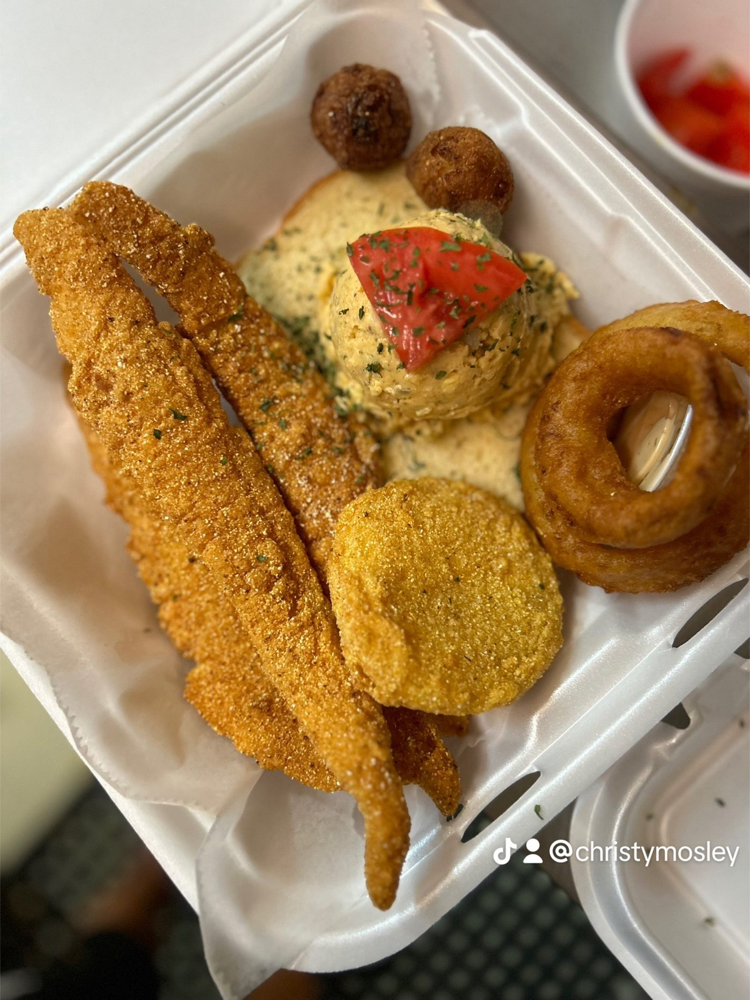

Southern comfort food, Moss Point
Plate after plate of food for the soul.
Kurbside Kitchen is a Southern comfort food spot in Moss Point serving the kind of food people drive across town for: sauced wings, loaded fries, open-face sandwiches piled high, fried green tomatoes, hush puppies, okra, gumbo, and banana pudding to finish.
Open Wednesday through Saturday, 11 AM to 6 PM. Closed Sunday through Tuesday. Takeout available, plus delivery through DoorDash and Caviar.
What the regulars order
House standouts


Hours
- Wednesday - Saturday: 11 AM - 6 PM
- Sunday - Tuesday: Closed
Find us
3413 Elvira Granderson Rd
Moss Point, MS 39563
Get directions
Order
Hungry now? Call ahead for takeout, or find us on DoorDash and Caviar for delivery.